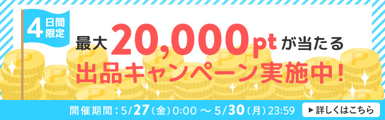
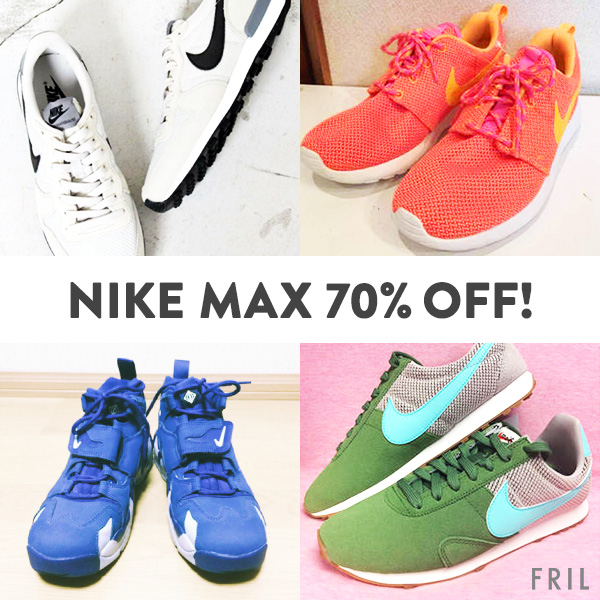
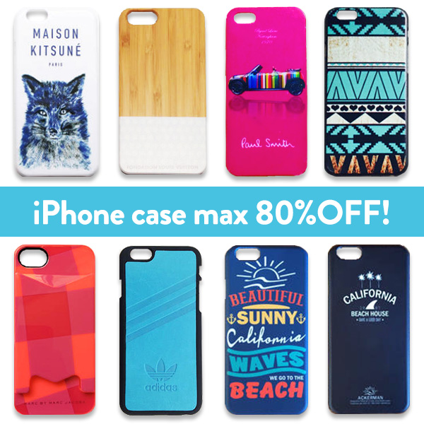

HARUKA ITO
FRIL's Campaign
手数料無料記念 出品キャンペーン
FRILのデザインが一新された時期と重なり、新たなガイドラインを意識して制作しました。
2016.10

シェアキャンペーン
シェアといったサービスを用いたキャンペーンなので、どのユーザーにもデザインでイメージを誘導できるように意識しました。Twitterとブログの2つの方法があることをわかりやすく伝えたく、2色で半分に分けてロゴを大きく取り入れて構成しました。
2016.06

出品キャンペーン
ポイント付与の明るいイメージと清涼感のあるバナーにしたいと思い、制作しました。
2016.05

フリルカード入会キャンペーン
フリルユーザーはクレジットカード利用者が少なく、若い子たちのファーストカードになってほしいという意図で、若者受けするようなポップなデザインを制作しました。
2016.02


福袋救済キャンペーン
年末年始に増えるであろう福袋の出品を促すキャンペーンで、FRILのお正月をコンセプトに制作しました。
2016.01

FRIL × ブランディア コラボキャンペーン
キャンペーン内容が説明しづらかったので、わかりやすく説明しました。
2015.10

Wチャンスキャンペーン
キャンペーン内容に合わせ、明るいイメージに制作しました。シリーズ化され3回続きました。
2015.10


FRIL 入稿先：Instagram
iPhoneケース訴求
キャッチーで人気のあるケースで構成し、多くに人に興味を持たれるよう制作しました。
2015.12

NIKEスニーカー訴求
春の年齢層の若い女性のスニーカー訴求だったので、アクティブな若者をイメージして制作しました。明るいバナーにするため彩度を上げ、instagramのようなフィルターをかけました。
2016.04

ハンドメイド訴求
出品されているハンドメイド作品のクオリティの高さと安さを伝える訴求をしました。家や旗など、ハンドメイド感を意識しました。
2016.03

靴訴求
いろいろな種類の靴を載せ、商品の幅が豊富だということが伝わるよう制作しました。画像との対比で、中央の文言は極力シンプルにしました。
2016.01

スマートフォンケース訴求
パステルカラーのバナーで女性受けを意識しました。
2016.01

ハロウィン訴求
季節限定のものでも、商品数の豊富さをアピールし、アプリの楽しい雰囲気が伝わるよう制作しました。
2015.09

ドレス訴求
イベントが重なる季節に制作し、高級感やトレンドを出すために雑誌の表紙を意識して制作しました。
2015.09

レディースファッション訴求
ペルソナを作成しそれをもとに商品を選び、加工しました。
2015.09

ブーツ訴求
ブーツの種類の豊富さを伝える訴求で、多くの女性に「かわいい」と思ってっもらえるよう意識して制作しました。
2015.09

FRIL 入稿先：Facebook
NIKE MAX 70%OFF!
インターン期間を通して、Facebookで効果の良い訴求とフォーマットを模索しながら制作していました。
2016.05

iPhone case max 80%OFF!
ユニセックス訴求だったので、iPhoneユーザーどの人にも刺さるよう、配色やブランド、認知度など意識して制作しました。
2016.04

FRIL 入稿先：Twitter
FRIL WORLD MARCHE
FRIL WORLD MARCHEというプロジェクトがあった際にそれを宣伝するバナーを制作しました。わかりやすく伝えるためにプロジェクトのイメージカラーと商品画像とブランドロゴ(類似)で構成しました。
2016.03